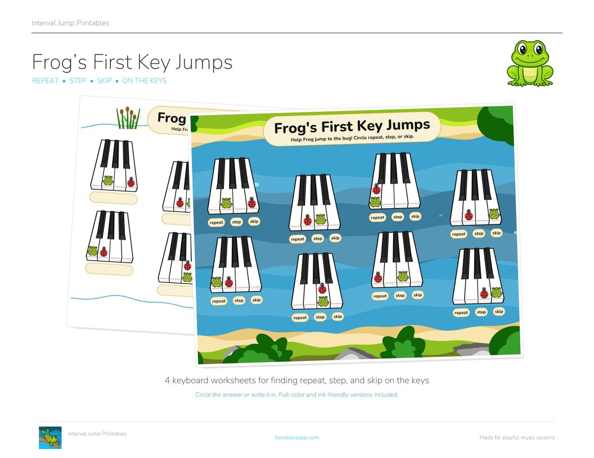
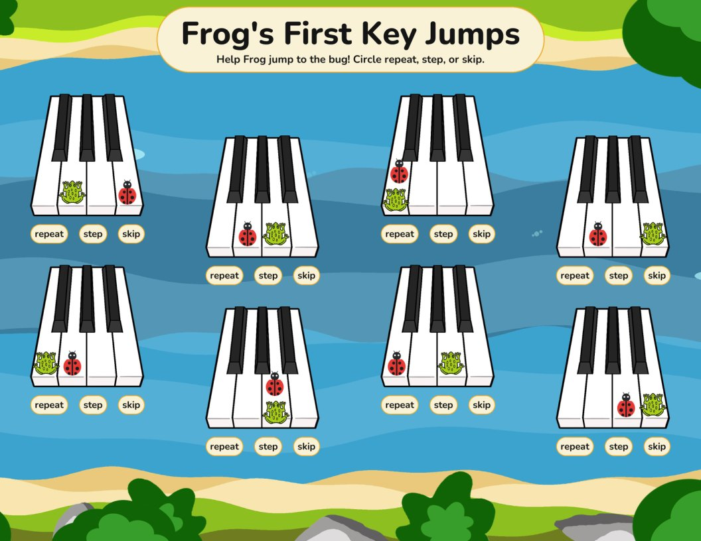
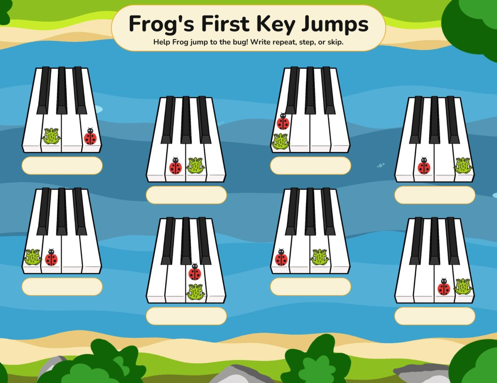
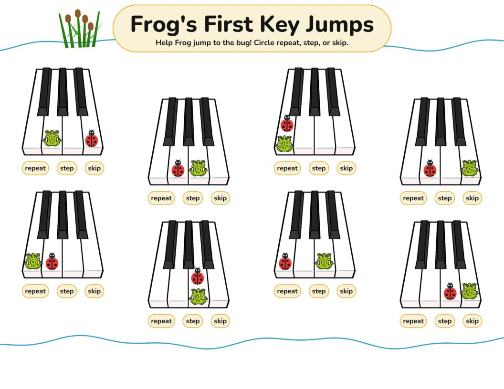
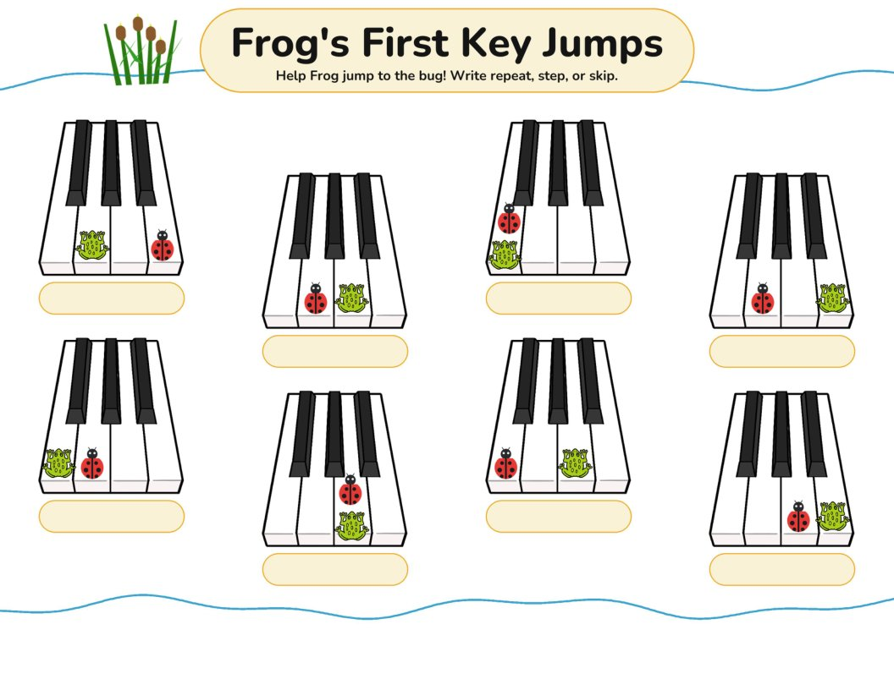
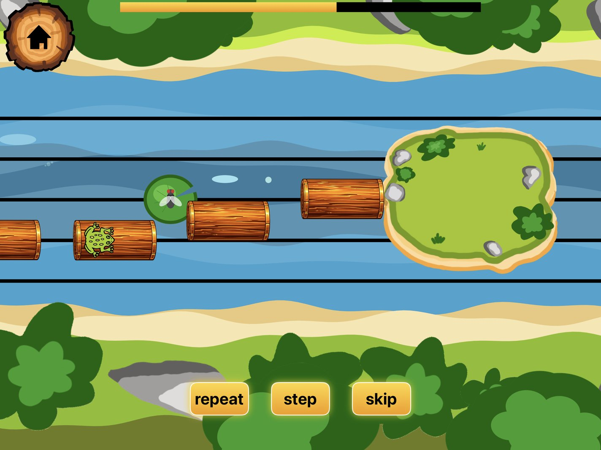

Free printable
Frog's First Key Jumps
Published September 11, 2026

Click to download the free PDFFrog’s First Key Jumps takes repeats, steps, and skips off the staff and onto the piano keys!
Frog is sitting on a key, and there is a ladybug on the key Frog wants to reach. Is that a repeat, a step, or a skip? Circle the answer or write it in, eight little keyboards per page.
Frog’s First Jumps practiced the same three patterns on the staff. This set is its sibling at the piano: the same words, the same frog, but now the distance is between keys instead of between notes. Reading a step on the page and feeling a step under your fingers are two halves of the same skill, and beginners need both. Use the two sets together, or hand a student this one first and let the keyboard do the explaining.
Two for one today: Ladybug Hunt is a cut-out frog and ladybugs for playing the same three jumps on a real piano, with a die deciding each jump.
Download the free printable
-

Circle the answer -

Write it in -

Ink-friendly circle -

Ink-friendly write-in
From the keys to the staff 🐸
In Interval Jump, Frog crosses the river by jumping from log to log on the staff, and every jump is one of the same three questions: repeat, step, or skip. Once a student can spot the jump on the keys, the game is where they learn to read it at speed.
Interval Jump is free to download, and repeats, steps, and skips are included in the free version!

Interval Jump
Read music fast
A frog crosses the river by leaping between notes on the staff. Repeat, step, and skip are free to play forever; Pro adds leaps, the 4th through 9th intervals, and custom practice sessions.
Want more free music teaching resources?
I'm making more printables, games, and teaching resources. Send me a note and I'll pass new freebies your way.
Free · unsubscribe any time Send me new freebies
Opens your mail app. Your address is only ever used to send you the free resources.